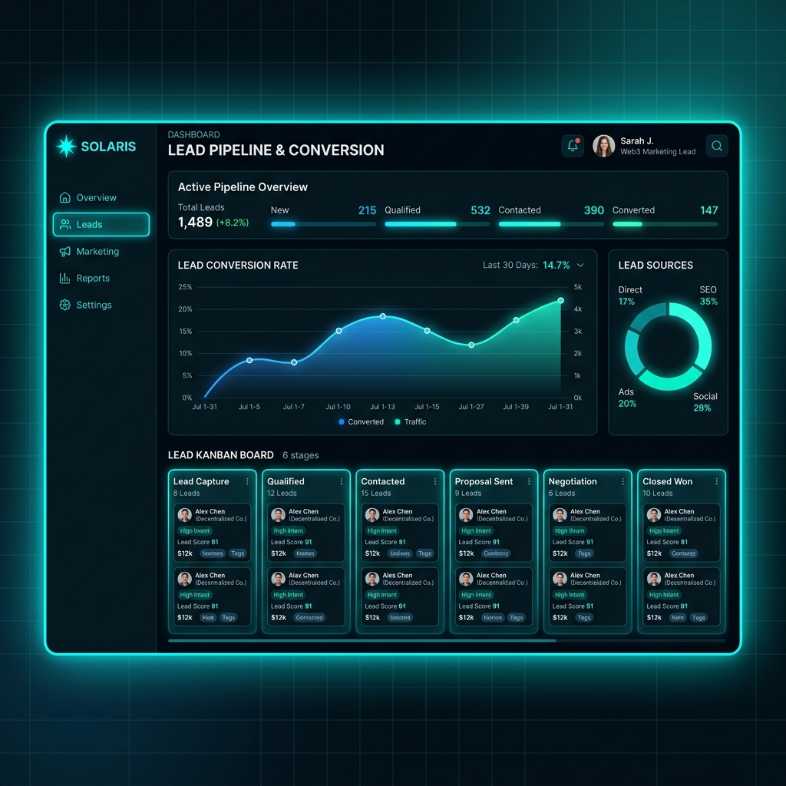

Economize 20 Horas de Trabalho Manual por Semana
Qualifique leads em tempo real usando inteligência artificial e CRMs invisíveis — sem pagar taxas mensais abusivas de plataformas de integração.

O Dreno Silencioso da sua Operação
Por que a maioria das agências e empresas B2B trava o crescimento na hora de escalar as vendas?
Dreno de Tempo Manual
Seus vendedores gastam até 40% do dia copiando contatos de formulários, criando tarefas e atualizando planilhas manualmente.
Esfriamento de Leads
O lead quente esfria a cada minuto que espera por um contato. Demorar mais de 10 minutos para responder reduz a conversão em até 80%.
Taxas Fixas de Integração
Ferramentas como Make e Zapier cobram por tarefas executadas. Se seu volume de leads sobe, sua margem é engolida por custos fixos.
A Máquina de Vendas Autônoma
Uma arquitetura moderna de dados que conecta a captação diretamente ao seu CRM, sem intermediários caros.
Qualificação Instantânea
Seus leads conversam com um assistente inteligente e interativo. A qualificação e o enriquecimento de dados acontecem em menos de 1 minuto.
Fluxo Direto para o Notion CRM
Chega de planilhas bagunçadas. Os leads qualificados caem diretamente no seu CRM de Kanban no Notion, organizados e prontos para contato.
Infraestrutura Custo Zero
Toda a estrutura roda dentro do ecossistema gratuito de ponta (Typebot, Vercel APIs e Notion). Pague zero de mensalidade de integração.
A Jornada do Lead Automação
Entenda como a informação se move instantaneamente de forma segura e resiliente.
Triagem no Typebot
O lead preenche o chat interativo, fornecendo dados de contato, tamanho da empresa e budget disponível.
Processamento Seguro
A nossa API Serverless na Vercel recebe os dados, valida o token de segurança e formata o WhatsApp para um link direto.
CRM Atualizado
O Notion CRM é alimentado em menos de 1 segundo sob o status "Triagem", notificando seu time de vendas instantaneamente.
Está Pronto para Automatizar?
Responda a triagem interativa abaixo e veja como a nossa automação registra você instantaneamente no nosso Notion CRM.
Perguntas Comuns
Como funciona a integração com o Notion?
Usamos a API oficial do Notion para criar cartões no seu CRM. Não há necessidade de usar Make ou Zapier, a nossa API na Vercel gerencia as requisições com segurança de forma direta e sem latência.
A automação funciona no celular?
Sim, o formulário Typebot e a landing page são totalmente responsivos, proporcionando uma experiência de conversação suave em dispositivos móveis.
Como faço para integrar no meu próprio Typebot?
Basta adicionar um bloco de "HTTP Request" no final do fluxo do seu bot configurado para enviar um POST para a nossa URL do webhook com o token gerado.